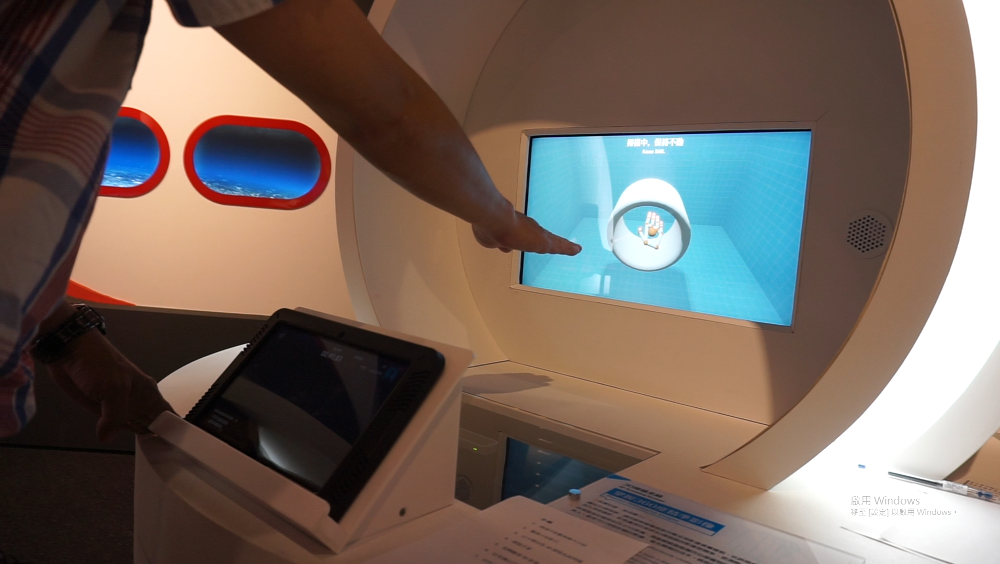

劉芳瑜、黃湘瑜指導教授：盧麗淑

Abstract
博物館參觀者伴隨不同的背景、階級、年齡層，博物館更需因應不同的觀眾需求， 而本研究在科工館的啟動創新實驗場發現中齡參觀者的出現頻率逐漸增加，但在體 驗其中科技互動展品時，相較於年輕世代使用者有較多體驗與操作上的疑慮，為此 本研究以啟動創新實驗場中的「3D掃描系統」關卡為例，針對中齡以上使用者進行 觀察與分析，以使用者為出發點針對此互動展品與互動情形作一連串的分析及評估。
本研究藉由觀察法觀察使用者行為並進行記錄，再輔以訪談法進一步的釐清，最後 經由使用性評估找出互動展演的使用行問題。根據分析結果，本研究針對「3D掃描 系統」關卡之使用性問題提出建議包括：(1)增加體驗流程說明及互動目的；(2)增 強錯誤指示可視性，並引導修正錯誤操作；(3)文字說明以圖文相輔。
